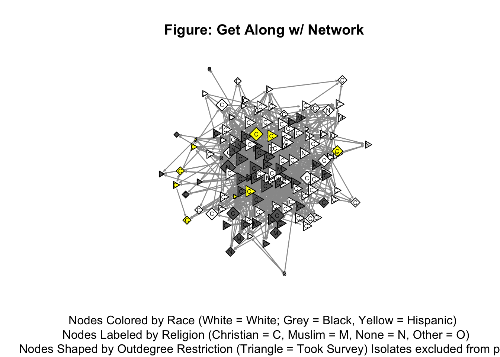
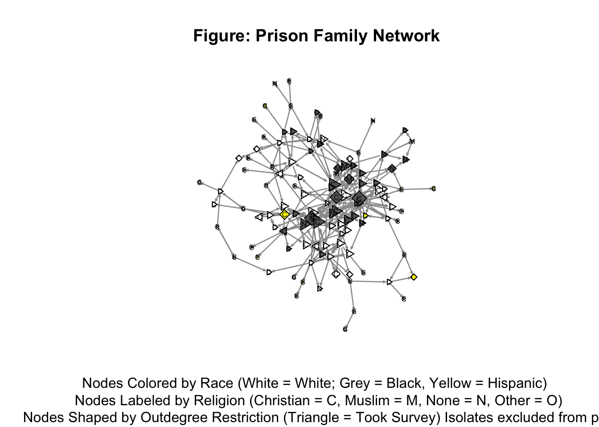
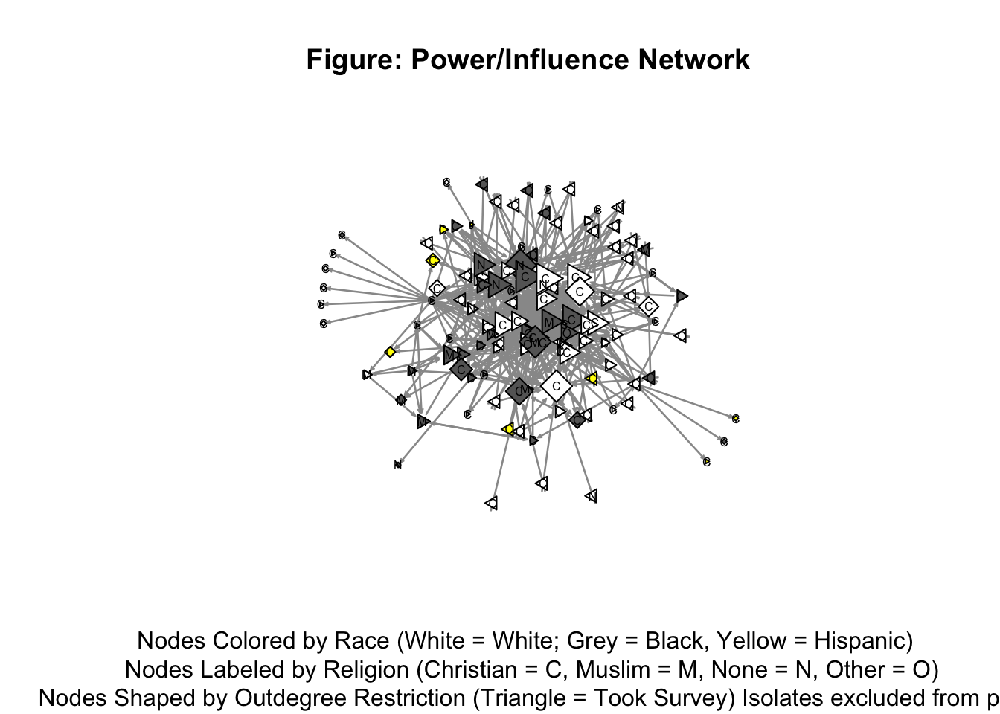
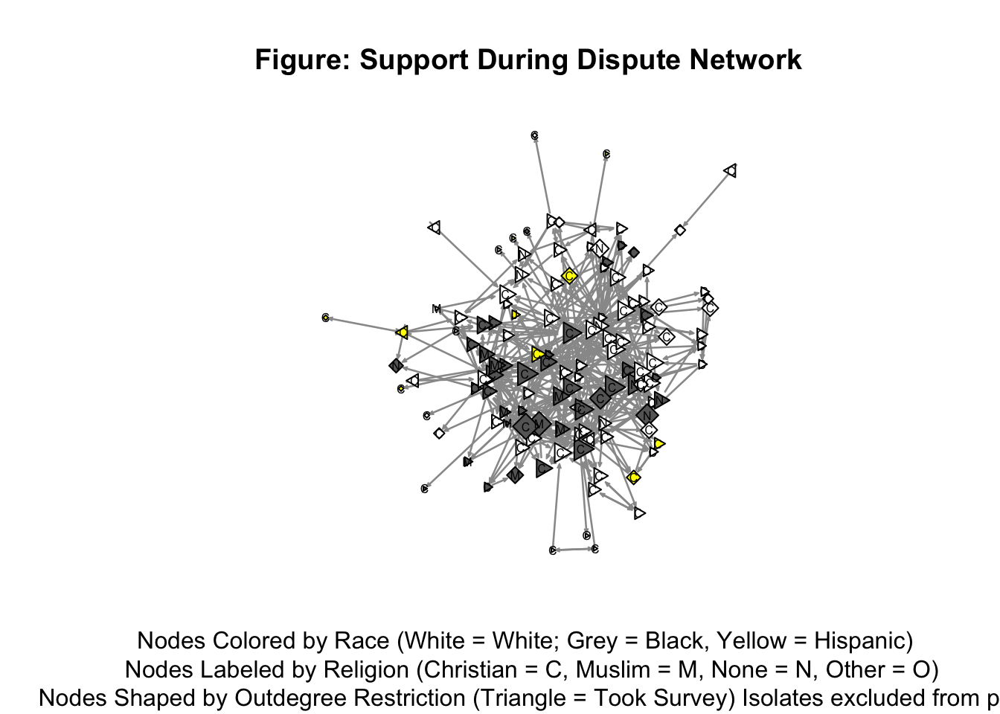

The WO-PINS or Womens Prison Inmate Networks Study investigates the incarceration and re-entry experiences of female inmates. The study is cross-sectional, but includes two different sites. This document describes the first unit (Site 1) for which the survey instrument was adminstered. In this unit, there are 131 women, of which 105 (80% response rate) took the survey. However, 1 case failed the UBACC thereby not giving consent, so her survey data could not be used.
This section provides a glance at several features of all the networks. The list of networks (with their acronym) in the WO-PINS data file are:
The Historical Romantic Relationship (HRR) network and the Current Romantic Relationship (CRR) network are too sparse for any sort of analysis. The Get Along With Ranked (GAR) and Top 3 Power Influence (T3P) are not described in the analysis below. For the affect data compiled on the power/influence network, those data are described in a separate section below.
Table # below gives several descriptives for the Get Along With (GA), Prison Family (PF), Power/Influence (PI), and Support During Dispute (SDD) networks:
| Edges | Reciprocity | Transitivity | Mean Indgree | SD Indegree | Mean Outdegree | SD Outdegree | |
|---|---|---|---|---|---|---|---|
| Get Along With (GA) | 1226 | 0.33 | 0.31 | 9.36 | 5.19 | 9.36 | 12.63 |
| Prison Family (PF) | 312 | 0.22 | 0.27 | 2.38 | 2.37 | 2.38 | 3.96 |
| Power/Influence (PI) | 585 | 0.06 | 0.28 | 4.47 | 7.79 | 4.47 | 5.31 |
| Support During Dispute (SDD) | 515 | 0.26 | 0.24 | 3.93 | 3.02 | 3.93 | 6.81 |
| White | Black | Hispanic | F-statistic | p-value | |
|---|---|---|---|---|---|
| Get Along With (GA) | 9.01 | 10.75 | 6.18 | 3.41 | 0.05 |
| Prison Family (PF) | 1.83 | 3.64 | 1.18 | 8.76 | 0.00 |
| Power/Influence (PI) | 3.61 | 6.84 | 0.91 | 12.02 | 0.00 |
| Support During Dispute (SDD) | 3.41 | 5.34 | 1.91 | 10.02 | 0.00 |
| Race (OR) | Race (Lower 95%CI) | Race (Upper 95%CI) | Religion (OR) | Religion (Lower 95%CI) | Religion (Upper 95%CI) | |
|---|---|---|---|---|---|---|
| Get Along With (GA) | 1.77 | 1.61 | 1.94 | 1.09 | 1.00 | 1.18 |
| Prison Family (PF) | 2.02 | 1.66 | 2.44 | 1.73 | 1.45 | 2.07 |
| Power/Influence (PI) | 1.31 | 1.16 | 1.49 | 1.13 | 1.01 | 1.27 |
| Support During Dispute (SDD) | 1.81 | 1.56 | 2.09 | 1.67 | 1.46 | 1.91 |
| Age (Moran’s I) | Age (p-value) | Grade (Moran’s I) | Grade (p-value) | OGS (Moran’s I) | OGS (p-value) | Time-In (Moran’s I) | Time-In (p-value) | |
|---|---|---|---|---|---|---|---|---|
| Get Along With (GA) | 0.25 | 0.00 | 0.05 | 0.29 | 0.18 | 0.00 | 0.32 | 0.00 |
| Prison Family (PF) | 0.14 | 0.05 | 0.05 | 0.47 | 0.10 | 0.17 | 0.26 | 0.00 |
| Power/Influence (PI) | 0.01 | 0.74 | 0.10 | 0.04 | 0.15 | 0.00 | 0.09 | 0.05 |
| Support During Dispute (SDD) | 0.26 | 0.00 | 0.09 | 0.19 | 0.22 | 0.00 | 0.49 | 0.00 |



